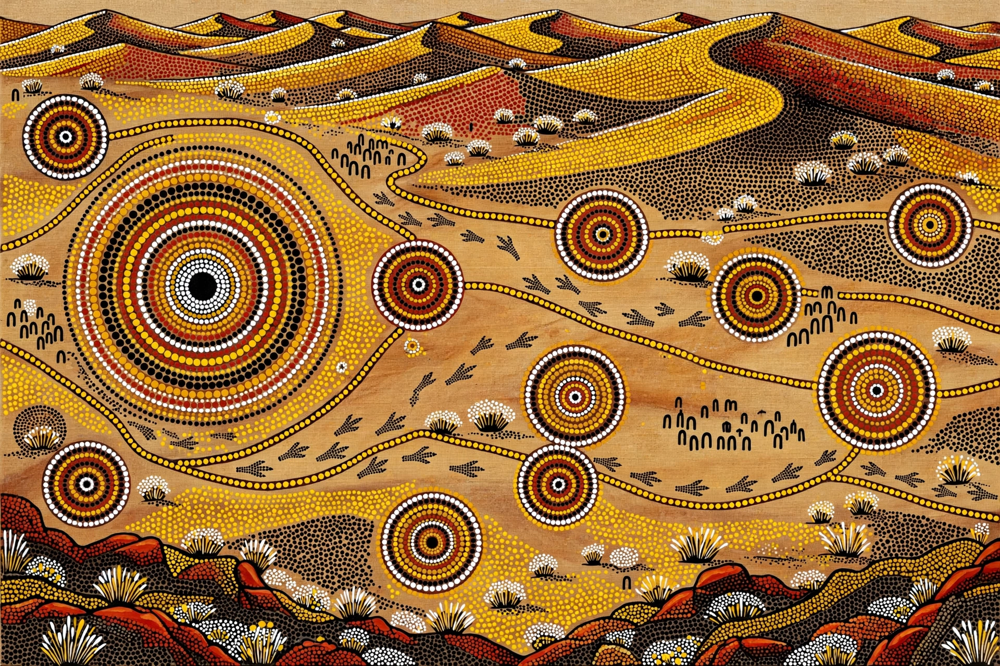

Papunya Tula, registered as Papunya Tula Artists Pty Ltd, is an artist-owned cooperative formed in 1972 in Papunya, Northern Territory, Australia. It is widely regarded as the birthplace of the contemporary Western Desert art movement, often called "dot painting".

In 1971–72 schoolteacher Geoffrey Bardon encouraged senior Aboriginal men at the Papunya settlement — Pintupi, Luritja, Warlpiri, Arrernte and Anmatyerre — to paint their Dreaming (Tjukurrpa) stories first on school walls and then on boards and canvas with acrylics. Artists included Clifford Possum Tjapaltjarri, Kaapa Tjampitjinpa, Johnny Warangkula Tjupurrula and Mick Namarari Tjapaltjarri. The cooperative gave artists control over production and marketing.
Papunya Tula's work transformed global perceptions of Aboriginal art, achieved major international exhibitions and record auction prices, and supported the outstation movement as Pintupi artists helped establish Kintore and Kiwirrkurra. Paintings encode sacred geography, with sensitive elements sometimes obscured by dotting.
See also: The Dreaming